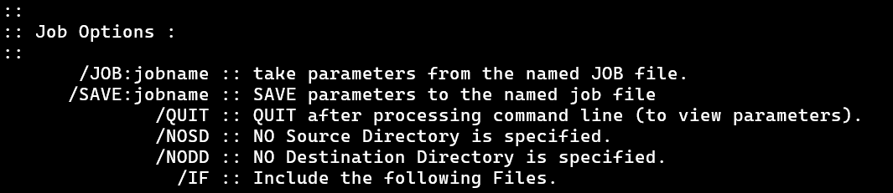

Lesson 10 -
ROBOCOPY Options Part 6: Job Options

This set of options isn't strictly necessary for our back program goal, but it might prove useful for something you have in mind so we will show it off a bit. It also eases us in a little to working with files and not directly in the command prompt.
Use /QUIT to view the options
We start with this one, not because of it's utility, but because it is easy. Run ROBOCOPY like you normally would, but use /QUIT in addition to whatever other options you like.
The only thing that prints out is the input section. The idea here is you get a change to view the inputs as ROBOCOPY understands them to make sure they are what you are expecting them to be. Pretty straightforward.
Store Inputs in a file with /SAVE and /JOB
The other two options we are going to cover are the /SAVE and the /JOB options. These options allow you to save and make use of saved options and other inputs.
Maybe you're tired of having to type all these options in all the time. Then save them! To see this in action, run an option filled command for ROBOCOPY like
In the above command, we have included the option to save the options to a file called "JobData.rcj" located on the desktop using the option
/SAVE:"C:\Users\Rob\Desktop\JobData.rcj"The ".rcj" extension probably stands for RoboCopy Job, but I don't want to look it up. It's a nice thought and I don't want it spoiled.
Open the file and have a look inside. It quite a bit of interesting features going on.